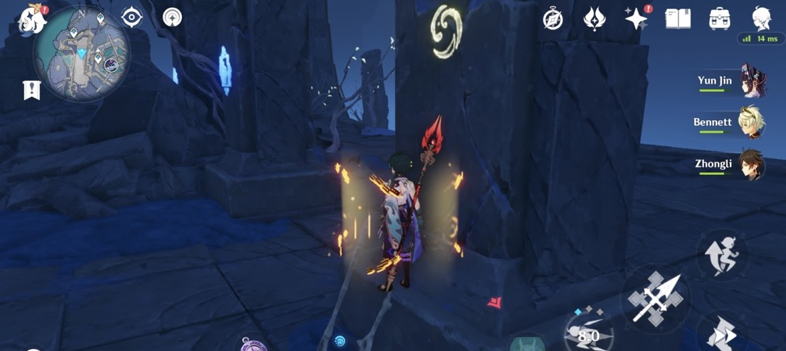
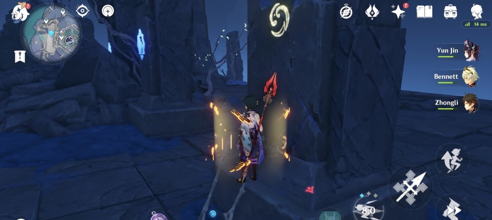

Enkanomiya (渊下宫) is an area introduced in Version 2.4. It is located underneath the whirlpool at Watatsumi Island, Inazuma.
It was also known as Byakuyakoku (白夜国) and Tokoyokoku (常世国).
Long ago, the Primordial One and its shining shades defeated the Seven Dragon Sovereigns. They created a single unified human civilization encompassing the whole world, including the original people of Enkanomiya. During the war between the Primordial One and the Second Who Came, Enkanomiya sank into the waters and became severed from the rest of Teyvat civilization. Its people met the bathysmal vishaps, who defied the gods.
Enjou says that Watatsumi Island was a product of the Archon war. Before that, Enkanomiya used to be inhabited by people with names that did not sound Inazuman (such as Argos, Antigonus, Spartacus). These names sound Greek, so maybe they had a connection with Khaenriah? Enjou says this was human culture before the divine envoys (of Celestia) interfered. After the Archon War, their names became Inazumafied.
During the cataclysm and archon war, the god Orobashi defeated the dragonheirs and built a bridge from Enkanomiya back to the surface and created Watatsumi Island. (Orobashi was the serpent god that was killed by Raiden, which left the Musoujin Gorge).
The people of Enkanomiya then renamed their place from Byakuyakoku to Enkanomiya. Orobashi also learned of the prophecy that the Hydro Dragon would be reincarnated in human form from a book (Before Sun and Moon), which told the history of Teyvat that Celestia wanted to censor. Orobashi then banned the book and performed experiments on the vishaps in attempt to prevent the return of the Water Sovereign.
Later, Khaenriah envoys arrived to seize the book, but Antigonus battled them and prevented the book from being destroyed.
In Enkanomiya there are eidolons or spirits known as sinshades (such as Aru/Argos), the ghosts of the past and an effect of the ley lines.
Enjou is revealed to be a pyro abyss lector. Enjou's name 渊上 (above the depths) is like the opposite of Enkanomiya's name 渊下 (below the depths).
During the 2.5 event, it is learned that the vishaps are able to imitate human form, such as Tsumi. They can be distinguished by their eyes.
 
